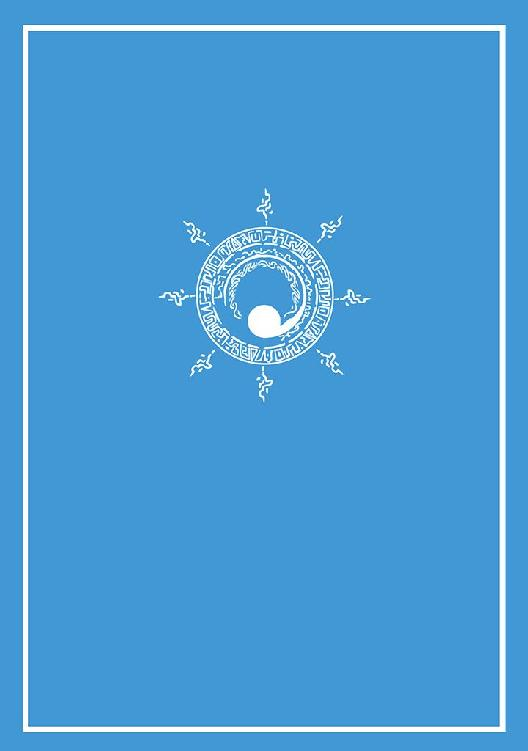

| 降霊術師の街・全年齢版 犬吠埼ナイン構想 (電子書籍普及委員会) | |
| 犬吠埼一介 | |
| (2016) | |
砂粒をすり潰すような鈍い音とともに、街そのものである城砦の中央に位置する巨大な門が開けられていった。全身に軽装の金属や革の武装を施した精悍な男女の一群がゆっくりと入城してくると、大きな喝采とともに迎え入れられた。
「導師様のお帰りだぞ」
「おお......有難や」
巨大な砂岩を組み合わせて構築された、頑強で巨大な城砦都市のなかで、日常の営みを行っていた老若男女たちが、帰還した一群を見てにわかに色めきたち、近寄っては、ねぎらいと尊敬の言葉をかける。武装した一群も、彼らににこやかに応えていた。
「今日も大猟だよっ。これを調理師のところへ」
「お安い御用です、導師ティタ」
霊的拳士と呼ばれる一群のなかでも、ひときわ若く美しい女性......ティタが、微笑みつつ、背後で縄によってぐるぐる巻きにされた巨大な肉塊を指すと、近くにいた物売師の男性が、自らの店舗を放り出すのも構わず、店の裏方から荷車を引き出してくると、そばにいた何人かの同僚に声をかけつつ獲物の肉塊を運び始めた。その様子を見届けると、ティタはようやくとばかりに大きく息をつき、額の汗を袖でぬぐい、他の拳士たちと会話を交わしながら、街の中心近くにある自らの居住区へと向かった。
霊的拳士......その攻撃は自らの素手による打撃であり、周囲にあまねく存在する霊的な力場を両拳に宿し、ほの白く光を帯びた拳を対象に叩き込むことで絶大な威力となる。獲物は、街を襲う〝憑き物〟だった。はるか古代に建築された、巨大な砂岩からなる城砦は、現在ですらその頑強さを変わらず保っていたが、すべての生活物資を城壁内で維持することができない以上、街の外を徘徊する危険きわまりない憑き物たちを撃退しつつ、しかもその肉を食料として得る霊的拳士たちは、まさに街の人々にとって欠くことのできない功績者であるといえた。
そこからやや距離を置いた、砂岩の建物の影になる位置で、一人の、全身を文様が描き込まれた布の服で覆った男性......グレフが、門の周辺でわき起こる喧騒にやや気を取られつつ、自らの職務を全うしようと苦心していた。自分の背丈をゆうに超える、細身の金属を縦横に組み合わせた、さながら肉のそぎ落とされた魚の骨を思わせる長い棒状の物体を、砂地の地面に掘った膝丈ほどの細穴に力を込めて押し込むと、砂と金属がこすり合わされる音が響く。構わず、グレフは周囲の砂を、持っていた瓶からしたたらせた刺激臭のする薬液で湿らせつつ盛り合わせて、棒が倒れないように固定し、二、三度、強く押したり引いたりしてその仕上がりを確認する。棒の根元付近では、硝子の枠に複雑な文様の術式ではめ込まれた特殊な鉱物が鈍い輝きを放っていた。彼は、その仕掛けが問題なく完全に機能することを確認すると、顔を上げ、水晶から削り出して作った希少な眼鏡を押し上げつつ、霊的拳士の居住区へと向かっていく一群をなおも遠目で追おうとした。
「導師グレフ」
その時、背後から、彼を探しにきたとみられる仲間の男が、声をかけた。グレフと同じく、文様の刻まれた布の服で全身を覆っている。その術式はグレフよりもやや単純なものだった。
「準備、整いました」
「ああ、こちらも今片付いたところだ」
霊的拳士たちの一群から目を離し、グレフは何事もなかったかのように周辺の装備を注意深くかき集めると、彼を呼びにきた仲間、彼と同じ降霊術師とともに、街の外れに位置する彼らの居住区へと向かって歩き出した。
「それにしても......いつ見てもあまりいい気持ちはしませんな」
仲間の男が、やや侮蔑とも取れる声色で、グレフにそう声をかける。グレフが目をやっていた門の周辺での出来事を指しての言葉だった。
「あの肉塊にしても、どれほどの霊魂が蓄積してああなったことやら。しかもそれを食すなどと......？」
男は、グレフが、すっと手を上げて彼を制したのを見て、慌てて口をつぐんだ。
「失礼......口が滑りました」
「なに、構わんよ。しかし、いい気持ちがしないのはわれわれも同じ......むしろはるかにそれ以上じゃないか。分かっているだろう」
グレフの言葉に、男は顔を伏せる。だが、それ以上言い返しはせず居住区への道を急ぐのだった。
砂岩の街は、平地に置かれた巨大な箱のように、四角形の城壁によって大きく底上げされ、大階段を下った先である門の外とはかなりの標高差があるにも関わらず、周囲の空間は居城の外と同じく濃い霧で覆われていた。その霧は、晴れることなく、朝から夜まで日がな一日、この街を、そして彼らが生きる狭い世界のすべてを覆い尽くしていた。霧は、時おり、意思を持つ者独特の動きを見せ、ふとあるところに集まっては小さな動物のような塊を形成し、すばしこく飛び回り、またもとの霧に帰る、といった不規則な動きを延々とくり返していた。
導師と呼ばれる、この狭い世界でさらに希少な存在であれば、その濃霧が見せる不可思議な動きに独自の解釈を加えることができただろうが、街のさまざまな機能を支える、それぞれに重要な役割を持った他の大半の者たちにとっては、霧は霊魂が集まってできたもの、という漠然とした共通の認識があるだけだった。その濃霧が見せる戯れともいえる動きは、ただ単に見慣れたものとして、特に意識されることもなく、物心ついたころから延々と続く日常の光景として見過ごされてきた。憑き物という、街の人々を襲う脅威である存在にしても、空間を漂う霊魂が、単純な構造の動物の肉体を依りしろとして、過剰に憑依した成れの果てとして、しごく単純に認知されているに過ぎなかった。霊魂に満ちた世界に暮らす彼らは、その特異な存在と絶妙に共存しているといえた。
グレフと連れの男が、街外れの彼らの居住区に戻ると、そこでは慌しく、両手にさまざまな備品を抱えた者たちが動き回っていた。皆一様に、文様を刻んだ布の服を着ていたが、その術式にはいくつもの種類があり、彼らの集団の内部での役割や立場を一目で分かるように示しているのだった。
「導師グレフ、戻られましたか」
「遅れてすまないね。昨日の大風で、霊視環の基塔がひとつ倒れたので、急いで補修していた」
彼が肩から下ろした重たい装備を、見習い導師の服を着た何人かの若い青年たちが、うやうやしく、といった雰囲気で手にすると、所定の置き場へと片付けていく。重要な街の防衛と外部観察の機能である霊視環を補修するためのそれらの装備は、非常に希少な唯一無二のものであり、損傷などもってのほかであるための、腫れ物に触るような手付きだった。導師グレフほどの霊的能力者の備品を片付ける役得に預かった彼らは、その小さな職務を完全に遂行すると、どこか誇らしげにグレフのほうへ戻り、遠巻きに彼を見守った。
「準備は整ったようだな」
中央の広間からひとつ奥に入ったところにある実験室の中に入り、周囲をさっと見渡すと、グレフはそう声をかけた。室内で、硝子管や熱源を複雑に組み合わせた、時おり蒸気を激しく吹き出す、ものものしい装置群をのぞき込んでいた何名かの技術師が、顔を上げると、眼の部分に硝子の板の入った分厚い面布を片手で持ち上げた。
「すべて仰せのままに。すぐにでも開始できます」
「......有難う。では早速で悪いが、始めようか」
グレフがそう告げると、湯気のこもった、若干蒸し暑いその実験室に、にわかに緊張が走る。技術師たちが数日がかりで、ただでさえ希少な備品を惜しげもなく投入して構築した複雑な装置が、今、導師であるグレフによってその真価を試されようとしていた。
グレフはまず、実験室の外れに置かれた大盆の中になみなみと満たされた無色透明な液体に、布の服が濡れそぼるのも構わず、両腕を肩の辺りまで浸すと、そのまま腕を大きく動かし、液体を何度かかき混ぜるような動作をした。しばらく後に液体から両腕を引き出すと、そばにあった薄い布で軽くぬぐっただけで、わずかな粘性のある液体のしずくがまだ腕に付着したままの状態で部屋の中央に移動した。床には、彼らの衣服に刻まれているのと同じ文様が、比較にならないほど複雑な術式で刻まれている。その中央に立つと、グレフは目の前の金属製の檻の中を見た。
大人の肩幅ほどの大きさのその檻の中には、二本の丸まった角を持ち、ふかふかの柔毛で全身を包んだ動物が、これから行われる実験のことなど何一つ知らず、まるで意に介さずといった様子で、じっとたたずんでいた。グレフが檻に近づき、そっと動物のつぶらな瞳をのぞき込むと......動物の様子に微妙に変化が生じた。動物は、まるで深く魅入られたように、グレフのほうをじっと向いたまま、動きを止めている。そのにらみ合いの膠着状態が数秒ほど続いた後に、グレフが目線を動かさないまま小さくつぶやいた。
「今だ、やってくれ」
周囲で控えていた技術師たちは、その声を聞くと、瞬時に反応して装置を稼動させた。複雑に組み上げられた硝子管の中を、淡く色の付いた蒸気がぐるぐると行き交う。また、ひときわ大きな硝子瓶の内部には、屋外を漂っていたのと同じ、あの、知的な動きを見せる濃霧のひと塊が封じられていたが、複数の硝子管から流れ込んだ蒸気とともに、その濃霧の塊も混ざり合いながら、いっせいに檻の中の動物へとどっと降り注いだ。
グレフのそばに技術師が素早く近寄ると、檻の上部の蓋を取り外す。視界の隅でそれを確かめると、グレフは慎重に両腕を檻に差し入れ、蒸気によって柔毛を薄く濡らした動物の体表を、ゆっくりとなで回すように手を滑らせていった。動物は、視点をグレフの目線とぴたりと合わせたまま、身体をまさぐられながらもじっとしている。同時に、グレフは周囲の蒸気ごと呼吸するかのように、深呼吸をくり返していった。床の文様が少しずつ淡い光を帯びていき、グレフの服に刻まれた文様とも反応するように明滅する。グレフの両手も、その一連の変化に連動するようにして、淡く光っていた。
少し後に、グレフが、動物の身体をぐっと握り締めるようにすると、無言で視線に一層の力を込め、動物の瞳の奥を、集中してのぞき込んだ。動物は、一瞬、ぶるりと震えたものの、すぐに何の反応もしなくなり、グレフの手の中で力を失った。動物の周囲を飛び交うように移動していた濃霧の塊、ひとつの霊魂が、にわかに反応して動物の様子を興味深くうかがうそぶりを見せる。反対に、動物の背中辺りから、別の色合いをした、ずっと小さな霊魂が飛び出したかと思うと、そばで広く口を開けるように置かれていた硝子管の内部の蒸気と混合して反応し、たちまち吸い込まれ、少し離れた場所にある硝子瓶に導かれるようにして移動していった。
「やった、成功だ」
若い技術師の一人が、思わず、小声でそうつぶやく。だが、それを見とがめた別の熟練の技術師が、慌てて彼を肘で小突いた。
「まだだ、よく見ろ」
その言葉の通り、技術師たちが状況を注視するなかで、もとから硝子瓶に封じられていたほうの霊魂が、動物の中に一度は入り込みかけたものの、突然、激しく忌避するようにそこから飛び出し、檻の周囲の空間を激しく暴れまわった。その鋭い拒否反応と、周囲に飛び交う予測不能な霊的力場によって、複雑に組み合わされた硝子管から勢いよく、さっきまでとはうって変わった不調を示す蒸気の噴出が発生すると、実験室は騒然となった。技術師たちが何とかその場を持ちこたえさせようと懸命に動き始めるよりも早く、何個かの硝子管と、肝心の、動物の身体から飛び出したほうの小さな霊魂が封じられた硝子瓶が割れて損傷し、蒸気が猛烈に吹き出し部屋中に充満するなかで、動物の小さな霊魂は自らの肉体へと瞬時に舞い戻り、城外で慎重に採取され、封じられていたほうの大きな霊魂は、一瞬、部屋をものすごい速さで飛び交ったかと思うと、石壁の隙間を縫うようにして外へと漏れ、飛び去ってしまった。
自身が両手で抱きかかえるようにした動物が、本来の魂を取り戻し、もぞもぞと動きを取り戻すのを見ながら、グレフはしばし呆然としていたが、すぐに気を取りなおし、技術師たちに片付けを命じると、実験室を後にした。技術師たちは、彼らなりの悔しさをにじませながら、周囲に散乱した貴重な薬剤や硝子管の破片などを片付ける作業に没頭していった。
「惜しいところでしたね」
身体に付着した、蒸気の淡い色素と混じった汗粒を、清潔な布でふき取りつつ深いため息をついていたグレフに、先ほど街の城門近くへ彼を迎えにいった男がそっと声をかけた。
「確かに......いつもよりはましだった。だが、依りしろがあれではな......」
グレフの嘆きに、男も唇をかみ締める。檻の中にいた動物は、彼らの集団、降霊術師と呼ばれる者たちによって、特別に創造されたものだった。普段は家畜とされている動物をひとつがい、砂岩と金属、そして霊的な文様の複雑に描かれた布によって幾重にも覆った、特製の飼育箱の中で飼い、やがて仔が生まれたと同時にその仔のみをさらに厳重に隔離し、絶対に他の雑霊が混入しない状態で丁寧かつ純粋に育て上げたものなのだ。しかし、そのとっておきの動物を使った今回の実験も、やはり依りしろの役者不足によって、希少な薬剤や備品を無駄にするだけの結果に終わってしまった。
「しかし、導師グレフ、あなたのお力があれば、いずれは必ず......」
男が、慰めるように、そう労わりの言葉をかける。グレフは、固かった表情を少し和らげると、彼にそっと微笑んでみせた。
「技術師たちに、十分な酒と食料をふるまってやってくれ。もちろん君にもな」
グレフは、腹心の彼の肩にそっと手を置くと、自身は建物の奥にある自室へと向かった。
家畜の柔毛をより合わせ、布を被せただけの簡素な寝具に、どっと身体を横たえると、グレフは深く眼を閉じ、実験の過程を思い返していた。技術師たちが数日がかりで構築した装置の術式の組み上げは完全であったはずだ。事実、依りしろである動物の霊魂は、彼の降霊術によって、その肉体を離れ、見事なまでの精度で硝子管を移動し、いったんは硝子瓶に封じられたのだ。しかし、肝心の、街の外でやっとのことで捕獲した、知的な活動を示す濃霧の塊......生前は人間だったであろう霊魂を、依りしろである動物に宿すことはついにできなかった。
思わず、悔しさに身体に力が入るのを感じると、グレフは長い息を吐いた。無駄にした薬剤その他の備品のこともそうだが、今日の実験に備えて、長い時間をかけて養成された依りしろでさえ、「一度死んだ人間の霊魂を別の肉体に再臨させる」ためには適さないことが分かったとなれば、その落胆は非常に大きいものといえた。
彼らの住まう世界を覆う濃霧は、皆、何らかの生命の成れの果てである。肉体を失った霊魂は、ただ漂い、彼らの住居である砂岩の城の周辺にも、それらは日常的かつ大量に見て取ることができた。そもそもの大昔、この世界には「操霊術式機構」、通称〝霊機〟と呼ばれる、非常に強大な技能集団が存在し、あまたの生物の霊魂を浄化し、天に還すための複雑な霊的儀式を日常的に行っていた。その高度な技能集団は細分化され、数多くの導師と呼ばれる能力者が分業しつつ、多様な職務を日々黙々と遂行していたのだ。かつての空は、一点の曇りもなく青く晴れ上がっていたという。太古から存続してきた霊機という存在、その機能を中心とした霊的文明は、最盛期には、技術の粋を集めた偉業として、〝不死者〟すら創造することも可能ならしめたというが、その超高度な技術が、些細なきっかけでひとたび完全に破綻するや、暴走した霊魂の奔流が壊滅的な破壊を引き起こし、長い長い歴史のなかで蓄積されてきた術式の記録情報のほとんどは、その際の霊的混乱によって完全に粉砕され、失われるに至ったのだった。
この大異変を、霊機に長年にわたり翻弄され続けた霊魂の怒り、祟りであると声高に唱え、主張する者もいた。しかし、高度な文明が崩壊し、残されたのは、古代に霊力の力場によって建築された頑強で巨大な砂岩の居城と、ごくわずかに残った、全盛期とは比べるべくもない霊的能力者たちのみとあっては......人々は、日々の糧を得るために、霊機の遺物である彼らに頼るより他はなかった。霊機の中枢の残存者たちは、大異変ののちに散らばっていた霊的能力者......導師の生き残りをかき集めると、彼らの血脈を保ち、少しずつでも増大させながら、砂岩の城にこもり続けてすでに数百年が経っていた。
だが、残された居城を含むわずかな生活圏にさえ、目につくほどに滞留した、霊機の機能不全後の死者の魂たちは、浄化されずに漂い続け、ひたすら日々少しずつ増加するその霊的複雑性の増大は、世界の霊的な完全飽和状態、つまり熱的崩壊の危機が近づいているものとして、密かに危惧されていた。その事実は霊機の残存する中枢のごくわずかの者たちと、一部の高位の導師たちのみが知るばかりだった。
導師グレフは、ふと、実験の前に見た、霊的拳士たちの一群のことを思い出す。彼らは、城内に帰還するや、街の住人から喝采を浴びていたことを。そして自らはどうだろうか。霊魂と肉体の相関関係を操作し、依りしろとなる肉体にそれとは異なる魂を呼び寄せ、憑依させる技能......その属性は、いうまでもなく闇に属するものであり、彼らの存在は、居住区からして街の隅に押しやられるほどで、衆目からの冷たい視線は日常茶飯事だった。
グレフはまだよい。それでも優れた霊的能力を持った高位の導師である彼は、街の中を移動していても、本心からかどうかは分からないまでもそれなりの敬いを受けることができるが、降霊術師の集団に属する者すべてがそうであるはずはなく、なかには、いわれのない冷たい待遇を受けたと、密かに居住区の部屋の隅で悔し涙を流す若い技術師もいた。グレフもそれを知ってはいたが、彼一人の力ではその長年にわたり定着した血族の境遇についてはいかんともしがたいところであり、歯がゆい思いもあった。それだけに、昼間の彼女......美しいティタの存在が、グレフにとっては非常に眩しく映ったのも然るべきであるといえた。
彼女は、この世界の迫りくる熱的崩壊の危機を、果たして知っていたのだったか......グレフはそう記憶をたどりつつ自問しながら、霊機文明の生き残りである導師たちのなかで、ひときわ光を浴びる存在である彼女のことを思い浮かべていた。街を襲う憑き物を、両拳にまとった霊的力場で叩き伏せて一掃し、街を危険から守りながら、同時に獲物として、ただでさえ乏しい食料の一助として獲得する。街の人々にとって、何と受け入れやすい、光として崇めるにふさわしい導師であろうか。そしてまた......彼女の類まれな美しさが、人々に自然と好意を向けられる要素として存在していた。彼女は、実に美しかった。その美貌、全身の肢体の絶妙な曲線、やわらかくて滑らかそうな白い素肌、白銀色のさらりとした長い髪、豊満な両胸に、長くてかたちのよい美脚......とても、憑き物らと格闘して拳を叩き付け屠ることを生業としているとは思えないほどだった。だがそれも、導師としての血筋が彼女にそうさせるのであり、彼女は自らの容姿などとは無関係に、幼いころからその職務の腕を磨くことにいそしんできたのだった。グレフも同じ導師として、幾度か、多くの言葉は交わさないまでも、集いの場に同席したことはあった。その時すでに、彼女のあまりにも目を引く美しさに見惚れ、密かに思いを寄せていたものの、彼女の存在は導師たちのなかでも高嶺の花といえるもので、つまり人気が高かったのである。闇の導師の烙印のあるグレフは、おいそれと彼女に声をかける機会もないまま、街外れの居住区にこもり、自らの降霊術をひたすら磨き続けて今に至る。闇の操霊術の使い手として、何度も、自らの力を、その暴走を、力に取り込まれて自我を失うことを恐れ、その都度、おぼろげに、憧れているティタの姿を脳裏に思い描いては、彼女の両腕に温かく包まれる自分自身を夢想し、どこか救われたような哀しい錯覚を覚えたりもしていた。
その夜、ティタの、滑らかな淡い白銀色の長い髪を両手で弄ぶ夢を見て、唐突に、薬品のにおいの鼻につく、いつもと何も変わらない居住区の自室で目覚めたグレフは、あるひとつの決意を胸に起き上がると、いそいそと身支度を始めた。昨日の実験があえなく失敗に終わったことにより、若干の暴挙も許されるという自暴自棄の心境になっていたのかもしれなかった。
空をくまなく覆う濃霧の隙間から、わずかに光が差し、白く、ほの明るく周囲が照らされた、この世界の昼間に当たる時間に、グレフは居城の中心に位置する交流広場へと足を運んでいた。調理師たちが腕によりをかけて料理した、憑き物を由来とする肉を煮込んだ食べ物がとてもいいにおいを漂わせており、建築師や物売師、調剤師や教育師といった、街の機能を構成する大勢の多種多様な面々が、この時間だけは、各人の日々の職務をいったん休止し、和みの雰囲気とともに広場に集まっては、温かい料理を食し、心置きなく会話しているという、一時の平和な空間が構成されていた。
グレフは、彼らの間を縫うように足早に移動し、視線を方々へさまよわせては、彼女......ティタの姿を探していた。食堂設備も兼ねているこの広場は、そこらじゅうに、砂岩と金属と木片と布を組み合わせた机や椅子が並べられていた。大勢の居住者たちが飲食を共にしているその場で、ただ一人の人間を素早く見付け出すことはなかなか簡単ではなかったが、今のグレフには、なぜか、一瞬でも視界に入りさえすれば彼女を見付けられる自信があった。
しばらく後に、広場の奥にある、小さな噴水設備の外周の砂岩に腰掛けるようにして、彼女を含めて三人の霊的拳士たちが、湯気の立つ肉料理の入った色付き硝子製の容器を持ち、食事をしているのを発見すると、グレフは、彼らの様子を、少し離れたところから何気ない風を装ってそっと観察した。ティタ以外の二人は男性の霊的拳士だ。彼女たちは、気の置けない関係なのか、同じ職務の導師としての気さくな様子で談笑し合っていた。その様子を見て、グレフは早くも呼吸と動悸が早まるのを感じていた。そして、しばしの躊躇の後......彼は、ついに意を決して彼女たちのほうへと近づいていった。
「皆さんでお食事をお楽しみのところ、大変失礼」
グレフは、高位の導師としての精一杯の気品を保つべく努力しながら、談笑していた三人の集団に声をかけた。男性二人の霊的拳士が、おもむろに近づいてきた男が降霊術師の衣装を着ているのを見て、瞬時に眉をひそめ怪訝な表情を浮かべかけたが、その布の服に刻まれた文様の術式の複雑さと、丁寧で温和な物腰を見て取ると、特に何もいわずに無表情のまま彼の次の言葉を待った。
「あらっ、導師グレフじゃない。珍しいわね、あなたから声をかけてくるなんて」
ティタのほうも、彼のような、街の中での立ち位置としては影の領域に属する導師が、他の職務の導師にこれほど積極的に話しかけるという、奇特な行為を取っていることに若干の戸惑いを覚えつつ、それでも、ほんの少しばかり歪んではいたが、彼女なりの精一杯の笑顔でグレフに応対した。
この時すでに、周囲の人間、たまたま近くにいた導師だけでなく一般の居住者も含めて、この場の少々異質な空気に気が付いた者がおり、いったい何事かと注目を集め始めていた。
「実は昨日、導師ティタ、そして他の霊的拳士の方々が城外から帰還するのを通りすがりに見たのだが......ティタ、君は相変わらず、見事な霊拳の冴えのようで、実に惚れ惚れした次第だよ」
グレフの敬意のこもった言葉に、彼女以外の男性の霊的拳士二人は、気が気ではない様子で顔を見合わせていた。一人が思わず腰を浮かしかけるが、もう一人の導師が、慌てて彼の服の裾をつかみ引き戻す。導師グレフは、闇に属する降霊術師の血族といえどもれっきとした高位の導師であり、迂闊に邪険に扱うと、後々に少々厄介な問題が発生するのも事実だった。また、グレフとティタという二人は同じ導師という関係でもあり、ただ単に日常的な会話を交わすことについて、本来であればそう大した問題はないということもあった。
「......有難う。お褒めに預かり光栄です。でも、ただそれだけをいいにきたわけじゃないんでしょ？」
自らの霊的能力を褒め称えられ、素直なティタは、うれしそうな表情を表さずにはいられない。しかし一方で、導師グレフの気配にただならぬものを感じていた彼女は、ふと怪訝な表情を浮かべつつ軽く首をかしげると、その続きの言葉をグレフに促した。
「ああ、そうとも。惚れ惚れするのは、君の霊拳の腕前だけではない。遠目に見てもなお、強く視線を引き寄せられるほどの、君のその類まれなる美しさそのものだ」
グレフは一息にそういうと、わずかに芝居がかった仕草で、彼女に対して深く一礼し、本来の導師としての霊的能力からいえば同格以下であるはずの彼女を、最大限に敬う仕草を見せた。
「なっ......な、なにをいって......！？」
ティタは、頬を淡く朱に染めながら、グレフが今、自分自身に対して取っている、酔狂といえるほどの行動に心底驚きながら、肉料理の入った硝子容器を音高く砂岩の上に置き、慌てて立ち上がった。そんな彼女の動揺をまるで意に介さずといった雰囲気で、グレフは、降霊術の高度な文様の術式が刻まれた布の服の内側の懐から、大変な希少品である小さなひとつかみの花束を素早く取り出すと、うやうやしく、彼女に向けて差し出した。そのとたん、周囲で様子をうかがっていた集団から、おおっ、という歓声が漏れる。困惑し、呆れたような顔を見合わせる二人の男性の霊的拳士と、あまりの事態に頭から湯気を出さんばかりの様子で硬直するティタ、そして、意気揚々とグレフは言葉を続けた。
「前々から、ずっと君に好意を持っていたんだ。ぜひ、僕のこの気持ちを受け取って欲しい」
グレフは、濃い灰色の瞳を彼女にまっすぐ向けたまま、花束を彼女に差し出している。その右手は細かく震え、額には、じわりと脂汗が浮かんでいたが、激しく動転したティタは、それに気付くこともなかった。一瞬、この噴水設備の周辺の時間が止まったかに見えた。だが、その次の瞬間、ティタは強く眉をしかめつつ、グレフから顔を背けると、差し出されていた花束をおもむろに片手で払いのけた。その拍子に、草の紐で束ねられていた花束がほぐれて、地面にゆっくりと散らばっていくのを、グレフは呆気に取られたように眺めていた。
「仰っている意味が分かりませんわ。失礼させていただきますっ」
本来朗らかな彼女には似合わない、硬い拒否という感情を込めた声でティタがそう告げると、呆然と立ち尽くすグレフを後に、三人の霊的拳士たちはその場を足早に立ち去っていった。周囲で彼らを取り巻くようにして眺めていた群集は、互いに小声で言葉を交わし合い、ざわめきながらも、まるで、その場に無様に取り残された導師グレフの怒りの矛先を自身に向けられるのを恐れるかのように、方々へとそそくさと散っていったのだった。
街の中央近くに位置する、霊的拳士の居住区、そのなかの休息区画として設けられた部屋まで急ぎ足でたどり着くと、ティタは、先ほどからの動悸が未だに続いているといった様子で、憮然とした表情のまま、家畜の毛と革、木と布を合わせて作られた、ふかふかの長椅子に身を横たえた。共に昼食を取っていた二人の男性の霊的拳士は、彼女の動転した心境に配慮したのか、今は姿を消していた。彼女はつい先ほどまで繰り広げられていた珍事を思い返したくなくとも思い返してしまい、困惑のため息をつかざるを得なかった。もうすぐ、午後の憑き物討伐のための準備をしなければならない。しかし彼女は、それを認識しつつも、気だるげに椅子に背をもたせ掛けたまま、目をうっすらと閉じて追想にふけっていた。
影の存在として、居住区すら街の隅にあるほどの、降霊術師という存在。その若き実力者、集団の領袖である高位の導師グレフが、まさか自分に対して、ああも唐突かつ露骨に求愛を告げてくるとは......つい先ほどまでは微塵も想定しかなった意外な出来事であるために、彼女はあまりの事態に激しく動転し、彼に対して必要とされるはずの配慮も何もなく、その場の激情に任せて、差し出された花束を思わず力任せに振り払ってしまったのだ。その瞬間の呆然としたグレフの固い表情が、彼女の脳裏に焼きついていた。
導師グレフ......彼という存在は、何も昨日今日、見知ったものではない。現存する霊機を構成し、支えている導師の生き残り組として、ごく幼いころから集いの場などで幾度となく彼を目にしていた。やがて成長するにつれて、彼が集いの場で、他の熟練の導師たちを前にして少しも臆することなく、降霊術師としての自らの持論を誇らしげに語る姿も見てきたし、それは十分に記憶に残っていた。
『......ですから、降霊術の高度な術式を使えば、それが可能なのです』
並み居る、高位の導師の証である複雑な文様を刻んだ衣服を身にまとった他の職務の導師たちが、呆れたようにため息をつき、顔を手で覆うのも構わず、まだごく若かりしころの導師グレフは、拳を机に叩き付けんばかりに身を乗り出し、話を続ける。
『だから、どうやって......？』
『つまり、霊的大破綻の直後から、霊機本来の本質的機能は何一つ稼動していない。すべての霊魂は死後ただ漂うばかりで、〝あの時〟からこれまでに浄化されて天に還った霊は皆無です。降霊術を使えば、まだこの居城周辺をさまよっていると思われる、かつての偉大な導師の霊魂を、別に用意した依りしろに再臨させることも可能なのです！』
一息にそう語ると、グレフはやや間を置き、周囲の年かさの導師たちを前に、言葉を続けた。
『それはすなわち......大賢者ベルクラドの魂でさえも、です』
グレフのその言葉を受けて、集いの場にそろった導師たちの間に、ざわめきがさざ波のように広がっていった。
『何と、不敬でありますぞ......』
『大賢者ベルクラド様といえば、あの、伝説の導師の......』
『そのような不遜な行いが許されるとでも......！』
騒然となった集いの場のなかで、なおもグレフは食い下がり、彼らに対して鋭い視線を向けた。
『それでもなお！ この混迷し危機に瀕する世界を救う手段を、〝伝説の不死者〟である彼の記憶、つまりは霊魂から得ようとすることは、果たして不敬でありましょうか？ 私は導師として、決してそうは思いませんが』
無謀な行為だ、そもそも降霊術とて、まだ未完成の技術に過ぎないはずだ、といった反対意見が噴出し、集いの場に収集がつかなくなりそうになったところで、渋い顔をした、議長である導師が、その場を無理やりに鎮めると、その話はいったんそこで途切れたままとなった。しかし、会話には加わらず、無言のまま、霊的拳士の一族の長の娘としてその集いの場に同席していた幼き日のティタは、自分とそう年も変わらないごく若い導師であるはずのグレフが、衆目のなかで立派に自らの操霊術に誇りを持ち、年かさの導師たちに対して強く意見してまで、この世界の混沌を修復するための方法論を精一杯に力説していたことを、印象深い記憶として、脳裏に色濃く残していたのだった。
「ティタ、時間だぞ。行けるか？」
彼女の追想をさえぎるようにして、昼食を共にしていた二人の男性がそっと近づきながら、彼女をいたわるように声をかけてきた。ひょっとしたら、自分はまどろみかけていたのかもしれない。ティタは、深く息を吐き、彼らに対してにやりとした気丈な笑みを向けた。
「もちろん大丈夫！ さぁ、今日もさくさくっと狩るわよ」
一度、軽く伸びをして、ティタは長椅子から軽々と身を起こすと、憑き物狩りのための装備が収容された蔵へと向かった。
軽装の、金属と革を織り合わせたような防具を、身体に密着した戦闘用の布の衣服の上から全身に身にまとうと、彼女はいつもながら気が引き締まるのを感じた。霊的拳士の職務である、憑き物の討伐とその肉の食料としての獲得という任に就くためにのみ作られたその装備には、何代にもわたり続いてきた彼女たちの血筋の人間の生き様がしっかりと根付いていると感じられるのである。
若干の地響きと、砂ずれの音を立てて、巨大な居城の正面にある門が開けられていく。周辺で日常を営んでいたそれぞれの職務を持つ者たちが、霊的拳士の一群が居城の街の外へと出陣するのを見ると、手を組み合わせて拝んだり、大声で喝采を送ったりしている。そんな期待と羨望の視線のなかを、彼女たちは黙々と進み、街の外へと至る唯一の出入り口である巨大な門を通り抜けると、はるか目下にまで延々と続く巨大な砂岩の大階段を下っていった。相も変わらず濃霧に包まれた世界。居城の外は、霊視環による霊的な防衛もないため、広大な砂の平野を駆け抜ける砂粒交じりの突風が、容赦なく吹き付けてくるのだった。
「行くよっ」
彼女たちは、口元を含め、顔の一部を覆い隠した砂よけの面布を通して深呼吸すると、その身に霊的な力場を徐々に構築していく。身体が軽く浮き上がるような感覚とともに、彼女たちの周囲に、吹き抜けていくそれとは違った流れの風が渦を巻くようにして発生していった。いつも通り、その独特の浮遊感を確認すると、導師ティタと男性二人の導師たちは、地面を軽やかに連続的に蹴り、霊力によって軽量化した自らの身体を、猛然と、すさまじい速度で前進させた。みるみる、背後の居城が遠くなっていく。それでいて、居城が見えなくなるほどには離れない。居城から少しばかりの距離を移動しただけで、霊視環の防衛力の及ばない範囲を徘徊している憑き物はそれこそ数が多く、わざわざ探すまでもなかった。
「......ふっ！」
ティタは、風のように駆けると、目前に迫りくる、巨大で醜悪な、そもそも何の動物であったのか原型すら留めていない憑き物に、両方の拳に宿ったほのかに白い霊力の塊を、一息に叩き込んだ。まるで、鳥が巨大な金槌で叩き潰されたような、うめき声ともつかない断末魔を上げて、憑き物は瞬時に肉塊と化す。それを確認するまでもなく疾風のように移動し、次の獲物を見付けると、彼女は霊力の風をまとった脚で地を蹴って目標に到達し、哀れな憑き物たちを次々と肉塊と化していった。両手の拳の霊力を対象に叩き込む際に生じる、若干の反作用による痺れに、わずかに顔をしかめるものの、多少荒くなった息を一瞬で整えると、彼女たちの活発な活動を察知して、逆に獲物にしようと集まってきた無謀な憑き物たちに対峙するために駆け出していった。
いったい、いつまでこうしていればいいのか......。居城である街の外の憑き物たちの数は、ごくわずかに増えたと感じることはあっても、決して減ったり、枯渇したりする心配は一切無用な様子だった。それも、彼女たちが一人前の霊的拳士として居城周辺を駆け回るようになって、もう十数年にもなるだろうか、その間、ずっとそんな様子なのだ。呼吸を調整し、全身を流れる霊力を、地を蹴る両脚と両手の拳に集中して還流させながら、彼女はふと、昼ごろに唐突に告げられた導師グレフからの求愛、そして、はるか昔に彼が集いの場で語っていた荒唐無稽ともいえる目標を思い出していた。今日、ふいに起きたその事件と、それに伴う回想は、彼女のほとんど変わることのない単調なくり返しの日々のなかで、珍しくも唐突かつ顕著な変化であるといえた。その時ふと、ティタは、振り払ってしまったグレフのやや大きな手と、そこからこぼれ落ちた、恐らくは非常に希少なものであったはずの珍しい花束の、淡くもきれいな色彩を思い出して、じんと胸が痛むのを感じた。
なぜ自分は、ああまでも激しく彼を拒絶したのだろう。グレフという存在は、別段、彼女の日常に常に存在するほどの深い付き合いではなかった。その一方、何度かの集いで、彼の存在をたびたび目にするなかで、男性としては美麗なほうに属すると彼女自身の目からしても思える、眼鏡をかけた、折れてしまいそうなほどに華奢で細身な彼の存在を意識しては、降霊術の研究を日夜のごとく重ねる、苦悩と憂いに満ちた彼の表情を見るにつけて、ティタは、彼の存在を、自分の強い力で守ってやりたい......といった、漠然とした慕情すら感じることも時にはあったのである。成長してからも、あるいは広場で、あるいは居住区へと至る道筋で、憂い気な表情をした彼の姿を見ることはたびたびあった。憑き物を撃退し食料とするだけのごく単調な日々を送る彼女にとって、街の人間から忌まれる降霊術師という存在であるはずの彼は、むしろ逆に、知的な探究心や、変化に満ちた日々を送る学者肌の人間として、羨望の対象ですらあったのだ。それだけに、その彼が、まさか唐突に彼女に、しかも彼の側から、たどたどしくも真摯な求愛をしてくるとは......夢にも思わなかった。導師グレフにとって、導師ティタの存在など、たかが霊的拳士のはしくれに過ぎないのでないかとすら思っていたのである。そんな複雑な心境がほんの一瞬の緊張の瞬間に交錯し、また他でもなく、彼が影の導師、降霊術師であるがゆえに、人だかりの多い噴水広場で唐突に思いを告げられたため、その驚きも伴って、ああした極度の拒絶の反応を示してしまったのだと......ティタは自らの心境を、まるで、誰にともなく言い訳するかのように思い返していた。
それにしても......もし本当に、導師グレフがかつて語っていたように、伝説の不死者、大賢者ベルクラドの霊魂が未だにこの世界のどこかに滞留していて、その霊を何らかの依りしろに再臨させることができたとしたら、果たしてこの世界の文明はかつてのように再建され、人々は救われるのだろうか......？
「皆、いい調子じゃないか。そろそろ、獲物を回収して戻るか」
男性の霊的拳士の一人がそう宣言するころには、彼女たちの駆けめぐった周辺には、憑き物だった肉塊がそこらじゅうに散乱する壮絶な状態になっていた。彼らは城門の近くに待機させてあった巨大な荷車を引き出してくると、肉塊を縄でがんじがらめに縛って固定しつつ載せていき、ようやくにして帰路についた。例によって、重たい砂岩の門がゆっくりと開けられ、彼女たちが帰還すると、街の人間たちから大いに歓迎を受ける。そんななか、一人の、布の服に特徴的な降霊術師の文様の術式を刻んだ男性が、ティタのほうに静かに近づいてきた。
「本日も職務お疲れ様です。これを、我らが領袖より、あなた様へと預かっております」
肉塊を調理師の作業場まで運ばせるために、男性の霊的拳士たちが立ち働いている、ほんの一瞬の隙に、その男性......グレフの腹心である男は、ティタへ、蝋で封をされた手紙をそっと手渡した。ティタは、軽くため息をつきながら、特に表情を変えることもなく自然な動作でそれを受け取る。まるでその男と最初から会話などしていないかのようだった。彼女がすんなりと手紙を受け取ったのを確認すると、腹心の男はその場からすぐに離れて街の中へと消えていった。
「......さすがに、あのままじゃ終わらせないってことかしら？」
渡された手紙を懐に忍ばせると、ティタはふと口元に笑みを浮かべつつ、何事もなかったかのように、獲物を処理する職務へと戻った。
中心街から外れた、城砦の外れにあるうらびれた区画に、降霊術師の居住区はあった。狭い路地のそこかしこに、実験のための硝子製の備品類や、薬剤の空き瓶などが、大量に、足の踏み場もないほどに置かれている。実験室が含まれている複数の建物からは、微妙に煙くさい刺激臭のする空気がもうもうと漂ってきていた。地面にもところどころ、漏れ出した薬品のものと思われるねばついた血痕のような黒い染みが点々と残っており、それらが全体的に、この降霊術師の住みかを、余人の近づきがたい雰囲気を帯びた、ひどく怪しげな場所に見せていた。
導師ティタは、午後の遅い時間、なぜかまったく人気のないこの区画を、薬品類の刺激的なにおいに眉をひそめつつ、積み上げられた薄い硝子製の備品につまづかないよう気をつけながら、グレフからの手紙に記された場所を目指していた。そこは導師グレフの個室が設置されている建物......つい先日、純粋培養した動物を依りしろにした大規模な実験が行われた建物でもあった。
周囲のものよりもいくぶん大きな、その、砂岩を積み上げて構築された住居兼実験室の前までくると、ティタは少し息を整え、思い切って、金属で補強された木製の扉をゆっくりと押し開けた。きしむ音とともに扉が開くと、中はひっそりと暗く、湿っぽい空気で満ちていた。まだ午後の時間帯とはいえ、明かりもろくに灯されていない室内を見通すには、彼女はしばし目を慣らす必要があった。少しして、部屋の奥から、彼女の訪問に気付いたグレフが、灯火の入った硝子容器を手に、ゆっくりと現れた。
「ようこそ、導師ティタ。こんなむさくるしいところで悪いね」
「とんでもない。お招きいただいて光栄ですわ」
彼女は、路地にあった廃棄備品とは比較にならないほどこまごまとした備品類や、整理された書物や書類、半分ほど消費された薬品の布袋などの類がところ狭しと並べられた部屋の中を見渡しつつ、そう、すまして返答した。お互いに、先日の一件があり、本来であれば気まずいところではあったが、導師グレフがわざわざ腹心の男を使い、手紙を直接手渡してまで彼女を自室に呼び寄せたという事情もあって、ティタとしては、彼がなぜそうまでして再度自分を求めたのかが気にかかっていた。噴水広場の件で終わりではなかった、ということは、グレフから、次の誘いの展開が必ずあるはずである。それがいったい、どんなものなのか......。
「ははっ。君の考えていることは、さすがの朴念仁の僕にも想像できるよ。まあ、こちらへ」
そう自嘲気味にいいながら、グレフは自らの個室へと彼女を招き入れた。行きがかり上、特に拒否することもなく、彼女はグレフの手招きに応じると、彼の部屋へと足を踏み入れる。そのとたん、驚きと共に目を見開いた。それほど広くないグレフの自室には、広間と違って明かりが灯っており、硝子管や熱源が複雑に組み合わされた、降霊術の実験装置一式がすでに構築されていたのである。先日行われたものと比較すればいくぶん小規模なものだったが、しかるべき導師が見れば、その術式はまさしく、れっきとした降霊術のものと見て取ることができただろう。
「これは......？」
初めて目にする一連の奇妙奇怪な実験器具の術式を見て、ティタは呆気に取られたようにつぶやいた。熱源にはすでに火が入れられており、硝子管の中には、若干の刺激臭と淡い色の付いた蒸気が複雑かつ活発に行き交っていた。
「これかい？ 他でもない、今日の実験に使う、降霊術のための道具だよ。決まってるじゃないか」
そのグレフの声に含まれる、どこか悪戯っぽく妖しい響きに、ティタはびくっと身をすくませると、いつのまにか背後にいた彼をふり返った。
「実験？」
「そうだ。ご存知の通り、降霊術はまだ未完成なものでね。日々くり返し検証することが非常に大切なんだよ」
そういいながら、くっくっと軽い笑い声を漏らしつつ、彼女のほうへと歩み寄ってくるグレフ。その瞳にはっきりと濃厚な暗い狂気の気配を感じた彼女は、慌ててその個室から逃げ出そうとしたが、一歩早く、グレフが手を伸ばして彼女の腕をつかむと、乱暴に引き寄せつつ、木製の扉を勢いよく閉め、閂をかけた。ティタが短く悲鳴を上げ彼の腕の中で暴れたが、霊的能力を行使していない状態の彼女であれば、学者肌のグレフであっても、さすがに男と女であり、簡単に押し倒すことができた。
「......分かっているかしら？ 私が今本気を出せば、あなたはそこの岩壁を突き破って吹っ飛ぶのよ」
「もちろん。だが、君にそれができるかな？」
導師ティタの上にまたがるようにして彼女の身体を両手で押さえ込みながら、グレフは勝ち誇ったようにそういった。ティタは濃厚な焦りを感じながら、横目でドアのほうを見やる。
「無駄だよ。壁や扉は分厚くできているし、他の技術師たちは皆、希少な薬品や備品類の採集のために城外へ遠征中だ」
ティタの顔に、ゆっくりと絶望の色が広がっていくなか、導師グレフは、彼女の肩を押さえると、彼女の両眼に、自らの視線をじっと絡めていった。
「なにを......」
導師グレフに、力のこもった視線で濃密に見つめられ、彼女は全身に冷や汗がにじむのを感じた。嫌な予感は的中し、すぐさま、身体中にまったく力が入らなくなり、猛烈なほどの眠気が襲ってきて、意識を保つのが困難になっていく。
「や、やめ......て......」
グレフの両肩に手を当て、何とかして押し戻そうとするものの、体重をかける側と押し返す側では力の差は歴然としており、しかもグレフの霊的能力によって、彼女の意識はすでに奪われつつあった。もはや霊力を還流させて、彼を弾き飛ばすだけの集中力を保つことはできない状態だった。やがて、抵抗していた両手は、力を失い、ずるりと力なく崩れ落ち、垂れ下がっていく。そんな彼女の様子をじっと見つめていたグレフは、口元ににやりとした笑みを浮かべると、ぐったりとした彼女の身体を床に横たえたまま、実験器具の位置を調整し、素早く装置の術式を起動させた。
とたんに、硝子管の中を行き交っていた淡く色付いた蒸気がより一層激しく移動を開始し、流動して混合をくり返しつつ、中央の大きな硝子管に集まると、勢いよくティタの身体に降り注いだ。その瞬間、彼女の身体を押さえに戻っていたグレフは、その手にぐっと力を込めて、彼女の両肩を握り締めるようにしつつ、視線にさらに力を込めると、うっすらと半開きになっていたティタの瞳の奥をのぞき込んだ。すると、ぐったりとした彼女の肢体から、濃厚な濃霧の塊......それほど大きくない霊魂が飛び出し、蒸気と混ざり合うようにして硝子管の中に吸い込まれ、少し離れた場所にある硝子瓶の中に閉じ込められていった。
それからどれくらい時間が経ったのか......導師ティタには分からなかったが、やがて目を覚ました彼女は、自分の身体を動かしてみて、自由を取り戻していることを確認すると、周囲のおぼろげな空間を見渡した。全体的に霧がかかったような視界を通して見えるのは、硝子の曲面を思わせる光の屈折を通して、ぐにゃりと歪曲した、備品類で雑然としたグレフの部屋の様子だった。気付くと、自分自身の身体そのものも、霧がかかり、境界線がぼやけて、若干淡く発光しているようにも見える。怪訝な様子でそれを見つつ、グレフはどこへ行ったのかと探そうとしたとたん、彼女の身体を、それまでの人生で一度も感じたことのないような強烈な刺激が駆けめぐった。
『きゃあっ......あっ......あはははぁっ』
意思とは関係なく、腹の底から不自然な笑い声が飛び出してしまい、彼女は驚愕とともに自分の身体を押さえてみる。しかし、特に異常は見られず、若干、ぼやけたように見えるだけだ。この視覚の異常はいったい何だろうと思うその最中にも、まるで見えない手で全身をまさぐられているような感覚が彼女を襲い続け、彼女はその異質な感覚に身悶えし、立ち上がろうとしていたところをつまづき、地面にどさりとその身を横たえることになった。
『ちょ、ちょっと......！ いやぁっ......あははっ、グ、グレフ、あなたなのっ！？ あぁーっはっは』
他にこの怪現象の元凶に心当たりのない彼女はグレフの姿を探したが、周囲は限定的な空間で、曲面の内側を思わせる硝子の屈折像があるばかりで彼の姿は一向に見えない。やがて声だけが聞こえた。
「気分はどうかな？ その様子だと、今回の実験は見事に成功したようだけどな」
『じ、実験ですって！？ あっ、あはっ、ちょっとやめ......やめっな、さいっ！ ああっ』
自らの肢体をぐりぐりさわさわと淫靡にまさぐられ、その手が、絶妙な場所......豊満な両胸の横乳付近や、ふとももの内側といった性感帯、わきの下やわき腹、足の付け根など、敏感なくすぐったさを喚起させられる部分を蹂躙し、通り抜けてはまた戻ることをくり返すたびに、彼女はすでに無駄とは知りながらも、見えないグレフの手を払いのけようと、必死に身体を防御しようとせざるを得ない。だがその抵抗も空しく、彼女はぼやけた視界のなかで、涙を流しながら、導師グレフのなすがままに全身をまさぐられ、艶やかな嬌声を上げつつ、四肢を無駄に振り回して身悶えするしかなかった。
『あははは、あーっはっはっ、あんっ！ きゃああっ、あははっ......や、やめてぇ、だめぇーっ』
今までに感じたことがないほどの快感とくすぐったさの奔流が身体全体をぐるぐると駆けめぐり、自らの意思に反して、生まれてこのかた出したことのないような妖艶な嬌声を上げさせられてしまう。姿の見えないグレフにそれをしっかりと聞かれていることを意識すると、彼女はただでさえ喘ぎのために酸素が不足している頭がさらにぼうっとなって、顔がひどく赤くなるのを感じた。涙がとめどなく流れて、頬を濡らしていく。大爆笑しているためにうまく閉じられない口元からは涎がしたたり流れて、涙と一緒になって顎と首筋を濡らしていった。
『あぁんっ、あはっはは、やあぁーっ、あっだめぇ、もう、お願い、だ、誰か、たす、けてぇ、あっはぁっ』
彼女はただただ、抵抗するすべもなく、身体中を駆けめぐる、限界を超えた壮絶なくすぐったさと快楽の奔流に翻弄され続けていた。
「ふむ......これは実に面白い現象だな。人間の生霊とはこういうものだったのか」
グレフは、複雑に組み上げられた術式によって、霊魂を硝子瓶に封じられ、眼を閉じたまま、彼の膝の上でぐにゃりと伸びたように身体を無防備に横たえているティタの全身の肢体を思う存分にまさぐりながら、興奮に満ちた口調でそう無意識のうちにつぶやいていた。生来の降霊術師としての気質から、目の前で起きている、万にひとつという機会を利用、もとい、悪用して行われた、貴重な、禁断の実験......降霊術師たちの間ですら絶対の禁呪とされてきた、生きた人間の霊を直接操作するという術式によってもたらされた良好な成果を確認し、眼を輝かせる。ティタの霊魂は、彼女の肉体が近くにあるため、その影響を色濃く反映し、肉体の姿のまま、つまり、彼女が身にまとっている衣服なども含めて、現状の彼女の姿をほとんど残したまま、一方で濃霧の塊に似た外観でもあるといった、曖昧な状態として、瓶の中に封じられていた。彼女の声は、霊的な伝導によって空間を伝わり、その艶やかな、恥じらいと困惑と焦りの成分を大いに含んだ嬌声は、彼の耳にひしひしと響いてきていた。グレフはそれを十分に認識し恍惚となりつつ、彼女の精神的限界が近いことを知りながらも、なおも意地悪く彼女の肉体をまさぐり続ける。彼のおぼつかない手付きに比較してティタの反応が大層艶かしいのは、彼女に降り注いだ、淡く色付いた濃密な蒸気の中に、導師グレフしかその所蔵を知らない、禁断の薬品......かつて、使うことがあるのかといぶかしみながらも極秘の場所で採集しておいた、女性を奔放にし、蕩けさせる効果があるという伝承のある媚薬を、かなりの量を無造作に混入させていたからだった。
動物の毛と革と布を編み合わせた絨毯が敷かれた床にあぐらをかくようにして座るグレフの膝の上に、ティタの腰の部分がくるような状態で、彼女のやわらかくて豊満な、甘くていいにおいのする伸びやかな肢体が横たわっている。下半身と上半身は彼の両足を支点にして背中側に反り返るような体勢となっており、そのかたちのよい、居城の導師たちの誰しもが密かに脳裏では一度触れてみたいと願っていた、たわわな美乳という果実が、今まさに、導師グレフの両手によってふにふにとやわらかくもみ崩されていた。
『いやーっはっはっは、だめだめだめっ、ちょっとぉ、どこ触ってるのよぉーっ！？』
グレフの手が、自分の極度に敏感な両胸をもみしだき、その中心の部分を転がすように指で愛撫しているのを、目には見えずとも強烈に感じさせられたティタは、弱点付近の部分をもまれることによるくすぐったさに爆笑し、恥らいつつ身体を弾ませながらも、怒りを浮かべてグレフに抗議すると、自身が閉じ込められている硝子瓶の内側の壁を、両手の拳でぽかぽかと叩いた。しかし、現時点では霊魂のみの存在として肉体から乖離させられているため、彼女の霊的能力は完全に無力化されてしまい、ただの一人の女性でしかない状態であり、高位の霊能力者である導師グレフの罠にはまった状態である今となっては、すでにこの霊的な拘束から抜け出す手段などまったく存在しないのだった。
ティタの現実の姿の映し身のような霊魂の閉じ込められた硝子瓶と、その中で大爆笑しつつ暴れている彼女、そして、無防備な全身を晒しつつ眼下にじっと横たわっている豊満な肢体を交互に見やりながら、グレフは呼吸が荒くなり、全身の血が激流しているのを感じつつ、彼女の、美の権化のような魅力的な肢体を思う存分に堪能する行為に駆られていった。長くてさらさらとした銀色の髪も、眼を閉じた眠り姫のような美麗な表情も、ほっそりとした白い首筋も、豊満に張り出したやわらかい乳房も、きゅっとくびれたかわいらしい腰つきも、すばらしい曲線美の臀部も、すべてが今、まさに彼の手の中にあり、思うがままにその手によってまさぐり、くすぐることができるのだ。これは、なんという夢にまで見た状態だろうか。彼女の艶やかな嬌声がひときわ高くなる箇所を 発見すると、今度は集中的にそこを攻撃し、延々と蹂躙する......といった行為を、彼はそれからかなりの時間、飽きもせずねっとりと連続して続けていった。
「はは、ははは。すごいぞ、最高だ。実験は成功だ、やっと成功したんだ......！」
彼はうわごとのようにつぶやきつつ、傍らに置かれた、無色透明に近い、各種の薬品と媚薬を過剰なほど濃厚に溶け込ませた術式のための粘度のある液体に両腕を浸し、湿り気を適切に補給すると、彼女の肢体に、その液体の成分を塗り広げ、すり込むようにして、二の腕やわきの下、ふとももなどの、彼女が特に敏感に反応する部分をまさぐっていく。
『あっは、ははぁっ、はは......ひあっ、もう、だめぇえ、おねがい、ゆ、ゆるしてぇ、やあぁ、やめてってばぁーっ、あぁーっはっはっはあぁーっ！』
ティタは、すでに朦朧とした頭で、虚ろな笑い声とも嬌声ともつかない声を漏らしながら、ぐったりと硝子瓶の中で悶絶していた。弱点や、敏感な部分のありかは、すでにグレフに察知され尽くされてしまっている。肉体の側の全身の素肌にすり込まれた濃厚な媚薬によって、また、グレフの、くすぐりとまさぐりのたどたどしくも絶妙な手管によって、霊的存在として瓶に封じられた彼女の精神は、どろどろに蕩かされてしまい、もはや何も考えられず、ただただ、何ら抵抗する手段もないまま強制的に送り込まれてくる、くすぐったさと快楽の刺激にびくびくと反応し、艶やかな声を上げつつ身悶えするしかなくなっていた。その、彼女が生まれて初めて味わう甘美で淫らな性的快楽の奔流は、本来であれば、すでにとっくの昔に、絶頂というかたちで、その濃厚な蜜の粘り気のような刺激から一時の解放をされるはずだった。だが、霊的存在として肉体から切り離されているためなのか、どういうわけか彼女は、居住区の奥で密かに何度か一人遊びをした時に到達した、絶頂の領域にすら達することができないまま、延々と、一瞬の休息もなく、限界をはるかに超えた途方もない快楽に精神を押しつぶされそうになりながら、導師グレフが無慈悲に送り込んでくる快感の渦に翻弄され、彼の手管によってなされるがままの状態となっていた。
ティタが身に着けていた、霊的拳士の衣装のなかでも礼装といえる服装は、上着が無造作に脱がされ、戦闘職独特の、身体にぴったりと密着した薄い生地の肌着が露出している。わきの下やわき腹、ふとももといった部分は、もちろん生身の素肌がこれでもかと彼の目の前にさらけ出され、塗り込められた媚薬のしずくによってきらきらと濡れ輝いていた。グレフは、ただひたすら、すでに時間と空間の感覚すらなく、目の前の魅惑的な肢体という果実を貪る一匹の野獣と化していた。硝子瓶の中に封じられたティタは、もはや時おりか細い嬌声を漏らすばかりで、ぐったりと顔を地に伏した状態で、時おり、びくり、とその敏感な身体を弾ませ、震わせていた。肉体の側の彼女もまた、霊魂を奪われ、封じられているためにその眼は閉じられたままだが、頬は赤く上気し、呼吸は早まり、艶かしい表情で、うっすらと開いた口元から涎がたらたらと垂れしたたり衣服を濡れそぼらせていた。
そして、このまま、ティタが失神することも、絶頂に達することもできないまま、限界を超えた快楽とくすぐったさによる責めが続き、彼女が発狂するまで際限なく悶絶させられ続けるかと思われたその時......硝子製の繊細な備品が勢いよく割れ弾ける高い音が連続して響き、淡く色付いた蒸気が噴出して、それほど広くなかったグレフの自室に充満した。高度に組み上げられていた装置の術式が次々と破裂していく音が響くなか、蒸気がとめどなく噴出し続けて、破片と液体のしぶき、そして、さまざまな薬品の混ざり合った刺激臭が辺りに瞬時に満ちわたる壮絶な状況となった。
はっとしたグレフは、自らの背後で、順調に稼動していたはずの降霊術の装置の術式が、過剰な負荷により崩壊したことを察知すると、それまで、まるで悪霊にでも憑かれていたか、あるいは自らの力の影の領域に取り込まれたかのように没頭していた、ティタの肉体を貪るように蹂躙するという魅惑的な行為を中止すると、降りかかってくる破片から彼女の顔の周辺を守るように、必死で彼女に覆いかぶさった。そしてしばらくすると、蒸気の噴出と破片の降り注ぐ装置の崩壊にも一区切りがついたのか、部屋にふたたび静寂と、熱源が立てる静かな音のみが残った。グレフは身を起こすと、彼女の身体を慎重に膝から降ろして床に横たえ、術式が破綻したことで火事の発生寸前となっていた熱源を消火して処置する対応にしばらく追われた。
そして......いくつもの熱源をようやく処理し終えた時、導師グレフは、背後から、割れた硝子の破片が踏まれ、床とすり合わされる音を聞き、全身をびくりとこわばらせた。何が起きたかは分かっていた。彼は、次に訪れる結果を想定しつつ、背後をゆっくりとふり返る。するとやはり、封じられていた硝子瓶が破裂したことで、蒸気とともに噴出した彼女の霊魂が、結び付きの強い彼女自身の肉体に瞬時に戻っていったために、彼女は今、意識と肉体の自由を取り戻し、壁に手をつきながら、ゆっくりと立ち上がろうとしていた。頬は紅潮し、全身の素肌は媚薬混じりの汗粒にまみれ、衣服はまくれ上がり、留め紐がほどけた髪は乱れて顔に張り付いており、全身から妖艶な女性の性的魅力をいっぱいに放出している様子で、しかもそんな乱れた姿のティタは、先ほどまでの嬌態を引きずるかのように、息を小刻みに荒く乱していた。思わず、ごくりと生唾を飲み込みながら、導師グレフは、彼女のその魅力に引き込まれるように硬直したまま、まるで身動きできないでいた。
「僕はただ......実験を、実験を成功させたくて......協力を......君に協力して欲しくて......」
グレフが、上ずった声でたどたどしい弁明をしようとする目の前で、導師ティタは服装の乱れを手早くなおすと、長い髪を振り上げ、きっとした眼でグレフをにらみ付けた。
「大変素敵なご歓待、感謝いたしますわ、導師グレフ。ぜひ、お返しをさせていただかなくっちゃ」
ゆっくりと、導師ティタが、両手の拳に、還流させた霊力の奔流を渦巻かせ、まとわせながら近づいてくる。周囲の空気が力場によってかき乱され、湿気に混じった刺激臭とともに、硝子の細かい破片や、机から落ちた紙片などが音を立てて飛び回る。そんな彼女の怒気の嵐のなか、グレフは、自分の視界を覆うように、彼女の、霊力をまとい、ほの白く光った右拳のひと突きが、自身の顔面に向けてやけにゆっくりとした速度で放たれるのを眺め......次の瞬間、鈍い音とともに気を失った。
グレフによる邪な降霊術の悪用という縛めからやっとの思いで解き放たれたティタは、意趣返しとばかりに、自らの得意技である霊的拳士としての能力を行使し、本来は格上の存在であるはずの導師グレフを叩きのめした。彼女からすれば、自らの肉体と精神を散々に弄んだ罪はもっとずっと重いと感じていたのだが、最初の宣言通り、壁を突き破る勢いで彼を吹き飛ばし、肉塊と化さなかったのは、彼女のせめてもの温情といえた。
「あら、よかったじゃない。これで、私も同罪よね？ 悪しき導師グレフ様っ」
彼女は、今さらながらにこみ上げる怒りをこらえるように顔を若干引きつらせつつも、床に倒れ伏した導師グレフに対して皮肉な笑みを向けた。この言葉は極めて重たい事実であり、今の二人にとっては大きな意味を持つものだった。本来、太古からの霊的文明の中枢である霊機に属する操霊術師である二人は、どちらも、他の誰であれ人間に対して、危害を加えるかたちで自らの術式を悪用した場合、苛烈な罰が課されることはまぬがれない。その罰は、古来から続く厳格なものだった。ティタにしてみれば、今となっては、彼を地に堕ちた存在としてこの霊機から失わないために、自らも彼に対して操霊術を行使して同じく危害を加えることで、あえてお互いを同罪とし、二人の間で貸し借りなしの関係とすることで、その行為を外部に漏らさないようにしようという意図があった。彼女がそうまでしてわざわざ彼を守ることにしたのも、そもそも、彼のいかにも怪しげな手紙の招きにあえて応じて、この刺激臭の漂う街外れの居住区に危険を承知で一人で訪れたのも、もとはといえば、彼の純粋な求愛を、動揺のあまり無下に振り払ってしまったことへの自責の念があったためだ。しかしその結果、彼の自室で、ここまで濃密な〝歓迎〟を受けることになるとはまったく思いもしなかったのだが......。
ふと彼女は、地に伏したままのグレフが、一向に起き上がってこないことに怪訝な表情を浮かべた。まさか、手加減が足りずに、今度は彼の霊魂が肉体から飛び出してしまったのだろうか。そう思い、彼の様子を確かめようとかがみ込んだ彼女は、はっと息を呑んだ。導師グレフは、眼を見開いたまま、涙をはらはらと流し、ぶつぶつと小声で何事かをつぶやきつつ、薬液で汚れた床の絨毯を涙でさらに濡らしていたのだ。
「なんてことを......なんてことを僕は......導師ティタ......僕は君をこの手にかけてしまった」
「だーから、それは、もうおあいこだっていってるじゃない。ほら、立ちなさいよ」
ティタは、彼の手を取り、強引に彼の上半身を持ち上げると、霊的力場を用いてぐいっと引っ張り上げ、彼をどさりと床に座らせた。涙に暮れ、彼女の様子を呆けたように見ている導師グレフの様子に、彼女は不思議なおかしさを感じた。これでは、陵辱されたのが彼女なのか、彼なのか分からないではないか。彼のこの派手な暴走を招いたのが、そもそも噴水広場で彼の求愛を無下に踏みにじった彼女の非情な行為なのだとしたら、あながち、その例えも的外れではないのかもしれない。そう思いながら、彼女は、にやにやと笑みを浮かべつつ口を開いた。
「あなたの......その、お手並み、とってもよかったわよ。思わず燃え上がっちゃったぁ」
彼女の、そんな意外な、あけすけともいえる言葉を聞き、導師グレフの表情に、はっと正気が戻った。彼はゆっくりと、傷ついて割れ欠けた特製の水晶の眼鏡を外すと、涙をぬぐいつつその言葉に応えた。
「そうか。それはよかった。だが、これで、君とはもう......」
「私も」
導師ティタは、彼が、思いつめた口調で言葉を続けようとするのを強引にさえぎり、いった。
「あなたのことを以前から気にしていたわ、導師グレフ。もうずっとずっと、幼いころからね」
呆気に取られたように、言葉を失い、グレフは彼女の表情を怪訝そうにうかがう。彼女が、冗談でも悪意でもなく、純粋にそう述べたのだと理解すると、彼の表情ににわかに希望の光が戻ってきた。
「君と初めて会ったのは、まだお互いに、初級の操霊術すらろくに使いこなせないころだったな。今となっては懐かしいよ」
まだところどころに痛みの残る身体を押さえつつ、彼もゆっくりと立ち上がると、身体に降り積もった破片を払い落とす。彼女が語ろうとしている言葉が、今の彼にとっては信じられない内容であるだけに、少し前まで彼女の肢体を貪っていた時とはまた違った興奮が生じて、自らの鼓動と呼吸が早まるのをグレフは感じていた。
「誰だって、どんな導師だって、他の導師の術式は魅力的に映るものよ。ましてや、それが自分の属性とまったく異なるものならなおさらよね？」
彼女はそういいながら、ふたたび、幼いころの記憶を追想していた。
「いつだったか、集いの場で、あなたは皆を前にしていったわね。降霊術で、この世界を救ってみせるって」
「そうか、君も知っていたんだったな、この世界の破滅の危機のことを」
グレフは、若干の驚きとともに、彼女を見やった。霊的拳士として、憑き物を叩き潰して食料とする極めて単調な日々を送りながら、彼女がどんな思いで、蓄積しては世界を隙間なく覆い尽くしていく霊魂の濃霧を見ていたのかを思い、そして彼女が今、彼に向けている視線の意味も察するに至ったのだった。つまりは彼女にとっても、グレフという存在は別の意味で〝光の導師〟であったのだと。導師グレフは、今や落ち着きを取り戻していた。彼自身の根底に流れるひとつの確固たる意思を、言葉にして彼女に伝えようと、ゆっくりと口を開いた。
「ああ。僕は、降霊術で、絶対に世界を救ってみせる。今はまだ、実験に次ぐ実験の日々だけどね」
そうグレフがよどみなく述べると、彼をじっと凝視していたティタの表情が、ふっと和らいだ。
「実験ね......先ほどのお戯れも、そのひとつだったわけよね。せめて今度からは、ぜひ、私にも事前に内容を知らせて欲しいものだけれど。でないと......」
そういいつつ、彼女は、冗談だと分かっている口調で、右手の拳に、霊力の奔流を勢いよく還流させ、ほの白い光を勢いよく放ってみせ、グレフがひっと息を呑むのを、面白そうに見やった。
「その拳は勘弁してくれ。今度からって、また協力してくれるのか！？ それは有難いな。ぜひお願いしたい」
思わず、普段の導師としての気品を忘れた口調で、グレフは彼女に詰め寄った。そんな彼のがっついた態度に顔をしかめながら、ティタは彼をからかう。
「もうっ、そんなに私の身体にやみつきになっちゃったの？」
「いや、違うんだ......いや、まぁ、確かにそれもあるけれども......」
戸惑いながら目をそらし、頬を染める彼を、にやりにやりと、余裕のある視線で見つめて面白がりつつ、彼の腕にしなだれかかってくるティタの、押し付けられている両胸のやわらかさに恍惚となりながらも、グレフは頭を振って言葉を続けた。
「今日の〝実験〟で、極めて重要な事実が分かったんだ。人間の魂をこの世に再臨させるには、生きた人間の肉体を依りしろに使わなくては、霊的な波長が合わずに絶対に失敗する。生身の人間に対して高度な術式を使うのは霊機の究極のご法度だったから、この実験は最後の最後、瀬戸際の手段として、未着手の研究領域だったんだ」
「へぇー、そんな危ない実験に、いきなり私を、実験材料として使ったんだ。ひょっとして、あの告白も嘘だったのかな？」
「なっ、またその話に戻すのかよ。あの告白は本気！ 僕は本当に君のことがだな、まあ、それはそれとして、判明した事実というのは、君のその......身体だよ」
グレフはそういいながら、腕にまとわりつくように抱きついていたティタの腰まわりに、そっと手を回して抱き寄せ、彼女のやわらかくて滑らかな二の腕の素肌に、手のひらを滑らせていった。
「恐らく、長年にわたり、憑き物どもに霊的力場を叩き込んできたからだろう。霊力を全身に還流させる行為を続けてきたことで、君の身体は、霊的に、とても〝こなれた〟状態になっているんだ。ひとことでいえば、降霊術の依りしろとしてもってこいの、万全の素材ということになる」
「それだけ？ それだけなのぉ......？」
ティタが、憂いを帯びた瞳で、彼を見つめながら、耳元でそうささやく。グレフは、彼女の呼気を耳に感じると、ぶるりと身体を振るわせつつ、その問いに素早く答えた。
「いや、違うとも。君は僕の生涯の思い人だ。こんな危険な実験は、たとえ同じように身体がこなれている霊的拳士が、他にどれだけの数いたとしても、ティタ、君以外には、断じて任せることができない重大な職務だよ」
彼が精一杯の情愛を込めて、そう告げると、彼女は、まあ及第点ね、という表情をしつつ、彼にさらにその豊満な肢体を押し被せていった。
「おいおい......」
「何よっ。あれだけ私を燃えさせておいて、まさかこのまま帰らせる気じゃないでしょうね？」
彼女はそうささやくと、呆気に取られているグレフの頭の後ろに手を回し、熱烈な接吻を彼に見舞った。瞳の閉じられた彼女の上気した表情が眼の前にあるのを感じ、グレフは先ほどの戯れのなかでの興奮がすぐさま蘇ってくるのを自覚すると......彼女をより一層激しく抱き寄せ、彼のほうからも、彼女のやわらかい唇と舌を味わうかのように、濃厚な接吻をお返しとばかりに堪能する。グレフの背中が、どんと壁にぶつかった。二人はそのまま、ずるずると滑るように床に身体を横たえていき......。
そして、幾星霜。長い長い年月が過ぎた。青く澄んだ空が、砂岩の城砦都市の上に、高く高く広がっていた。天高く登った太陽の光がさんさんと降り注ぎ、さわやかな風が、緑の草花が生い茂る大地を吹き抜けていった。霊機の営みは、今日もまた変わることなく粛々と遂行され、あまたの生物の霊魂は適切に浄化され、天へと還っていくのだった。霊機の中枢が存在する、巨大な城砦都市の中心にある、砂岩を組み合わせて構築された居城......今や霊機の聖地として広く認知された、導師たちの居住区も含まれるその場所は、〝降霊術師の街〟と呼ばれていた。 完
この度は、「降霊術師の街・全年齢版」を手に取っていただき、まことに有難うございます。非常に魅力的な表紙を描いてくださったＳＵＮ介さんにも、心より御礼を申し上げます。
犬吠埼ナイン構想の八番目の章作品である今回の作品は、２００９年ごろに執筆したもので、サーガのなかで最も古い時間軸に属しています。その後の作品のまさに原点となるのは意外にもこの作品だったわけですね。非常に思い入れがありますし、まさに犬吠埼らしい情熱的な作品になっていると思います。
何といっても、描かれているのが「思いの力で、世界を変えて、幸せになろう」という、ナイン構想の根底に流れている思想であるところが、この作品の最大の魅力だと思っています。それはいうまでもなく、僕がナイン構想の全体をとおして、最も表現したい重要な要素であり。記念すべきこの作品から加わることになった悠久の旅路において欠かせないものなのです。込められた思いこそ、ナイン構想の魅力となります。
太陽の失われて久しい、霧に包まれた砂岩の街で。影の導師であるグレフが、いったいどんな思いで、世界を崩壊から救えると信じながら、降霊術の腕を磨き続けてきたのか。幼いころからの憧れであるティタの、光の導師としての活躍を目で追い続けてきたのか。
彼らのひたむきな姿をとおして、僕は何としても、希望を描きたかったのです。そもそも絶望とは、世界を変えることはできないという錯誤から生まれます。しかし実際には違うのです。世界は、変えられます。思いの力で、世界を変えれば、幸せになれるのです。その事実は、僕にとってかけがえのない不屈の信念であり、心の中でゆらめきながら常に燃え続けている、白い炎なのです。信念を持ち続けることができればどんなことであれ怖れる必要はなくなるわけですね。
影の導師であったはずのグレフが、誰もが難しいと否定したはずの降霊術で、実際に大賢者ベルクラドの魂を呼び戻し、霊機の文明を復活させます。しかもその手段として、憧れのティタの肢体を、思う存分にくすぐり、まさぐるという、意外な役得まで得ているわけですね。しかも結果的に、彼らは結ばれることになります。これは単なるヒロイズムの物語ではなく、思いの力を、不屈の信念を持つもののほうが、それを冷笑するものたちよりも強いという真実を現わしているのです。非常に重要なことですし、僕はこのことを作品で、さらにはナイン構想の全体で表現することによって、世界に満ちた理不尽と正面切って戦っているわけです。どんなに辛いときでも、決して思いの力を忘れてはなりません。不屈の信念を。それがあれば我々は無敵です。何も怖れる必要はありません。
影の導師だろうと、世界を崩壊から救えるのです。降霊術師の街という、栄光ある名前へと変えることができるのです。太陽を取り戻し、霧を払い、砂の大地を見渡す限りの草原へと変えることができるのです。憧れ続けてきたティタと結ばれて、幸せになれます。
それこそが希望なのだと。僕は力強く喧伝します。僕の思いが、確かに皆様に届くことを願っています。
この作品では、他にも、婉曲なエロスやフェチズムの表現を追求するべくいろいろな描写を行っています。くすぐりや催眠という、非常に魅力的な属性を取り入れています。ティタの妖艶で奔放で艶かしい肢体を思う存分にまさぐるグレフの情熱、それ自体が彼のあくなき探究心を表しているといえるでしょう。
ただ単にそうした描写を取り入れるだけでなく、幼いころから憧れ続けてきたティタへの、ひたむきで一途な思いを、ようやく今こそ遂げる瞬間にこそ、壮絶で文学的なエロスの極致が存在するわけですね。
そういう意味で、この作品におけるエロスの描写はまさに必然です。その燃え上がりこそが作品のもうひとつの魅力となりますので、ぜひお楽しみいただければ幸いです。念願のティタの魅惑的な肢体を思いのままにできて、グレフは感無量だったことでしょう。
ナイン構想はこれからも続いていきますので、ぜひご期待ください。読者様に読まれることで創作家は初めて世界に存在できるのですから。 犬吠埼一介
犬吠埼ナイン構想とは、僕がこれまでに長い時間をかけて執筆してきた、全部で九作品の、中編小説の章作品からなるサーガのことです。
個人出版や創作文芸の界隈では、複数の書き手が集まって合同で作った作品集に人気があり、評価されています。それに対して、ひとりで書いたものは単著ということになります。単著にももちろんよさはあるのですが、何とかそうしたポリフォニー的な面白さも追求することができればと思っていました。
そこで、時間軸を味方にして、リアルタイムの葛藤を連綿と描き続けていった作品群を、全体でひとつのサーガにするという方法を取ることにしたのです。
中編小説の章作品を、全部で九作品書くわけですから、全体が完成するまでに数年は掛かるでしょう。５年前の僕と５年後の僕では、同じようで少し違う存在ということになります。執筆される作品も、そのときそのときの時間軸に沿った内容になり、さながらひとり時間差のようになるでしょう。
九作品全体を見渡したときに「過去から未来へと渡るサーガ」の面白さを感じていただければ大変幸いです。苦労して執筆した甲斐もあるでしょう。時間軸を味方につけるこのやり方を、個人出版や創作文芸で試すというのも珍しいのではないかと思っています。
作品で表現するのは「思いの力で、世界を変えて、幸せになろう」という犬吠埼思想であり、不屈の信念と希望であり、思想の体系です。個人が思想の体系をサーガとして著すことができるところに新しい未来の可能性を感じています。九作品それぞれに込められる思想は必ずしもまったく同じではないかもしれませんが、それもまたリアルタイムの葛藤を描き続けていく旅の魅力であり、面白さではないでしょうか。
章作品それぞれを、電子書籍や紙の出版物にして頒布するほか、九作品すべてが完成した際には全体を一冊にまとめた合冊版の総集編として再編集し、新しい描き下ろしの表紙と挿絵を豪華に追加したいと思っています。ぜひご期待ください。
合冊版の総集編のタイトルは、「そして、涙は海になった」、略称はティアシーです。紙の出版物は装丁も豪華にして、充実した記念すべき一冊にします。
すべての章作品をボイスドラマ風の朗読版にして、聴ける小説としてもお楽しみいただくことで、作品の世界観をさらに広げていきます。小説の朗読というのは最近流行りの分野ですが、いち早く取り入れることで、朗読というジャンルも同時に盛り上げていければ大変幸いです。朗読版はホームページに掲載していますので簡単に視聴していただくことができます。
ナイン構想の章作品は、必ずしも全部同じジャンルの作品というわけではなく、ある作品は近未来ＳＦ、ある作品はスパイ小説、ある作品はスペオペといった幅広い内容となっています。しかしサーガ全体では、やはり思想を描いているという意味で、広義のＳＦに属すると考えています。ＳＦは大好きなジャンルで、昔から多くの作品に触れてきました。もちろん今も最も興味を持って取り組んでいる分野です。
総集編であるティアシーには魅力的なイラストを表紙や挿絵に複数枚使用し、いわゆるライトノベルの表現方法も取り入れます。朗読版と同様に、作品の世界観を広げることで、より深く楽しんでいただければと思っています。前面をエンタメで装飾し、背後に思想を置く折衷のスタイルこそ、僕の考える最も理想的な文学作品です。ナイン構想は、まさにその表現方法を最大限に極めた集大成だといえます。
一介の個人である僕が、なぜこのようなサーガを書き表そうと思ったのか。その思いとは何だったのか。完成した犬吠埼ナイン構想を、ぜひお読みいただければ幸いです。僕が表現した思想が、混迷する世界を旅するための希望となればと願っています。
ひとつの章作品を仕上げるたびに、新たな構想が降ってくる連続です。時間はかかりますがどうか僕の旅にお付き合いいただければ大変有難いです。作品の詳細はホームページでも紹介していますので、ぜひお気軽にご覧いただければ幸いです。
わさらー団とは、先駆者的なアルファツイッタラーでありデジタルネイティブ世代の若者として非常に大きな知名度と人気を誇るわさらーさんが創設したネット団体のことです。２０１１年ごろから活動を開始し、そのころ一世を風靡していたネタクラスタ、ふぁぼ界隈の盛り上がりをある部分で継承し、またある部分では独自に変化させながら、新しくて楽しいことをやっていこうという姿勢を常に継続しています。
そうした経緯の詳細については電書会レーベル作品である「わさらーが語る！ Twitterの歴史」および「わさらーと黒川祐希 対談 ～デジタルネイティブはどこへ向かうのか～」で分かりやすく書いています。ぜひお気軽にお楽しみいただければ大変幸いです。
主たる活動の場はTwitterですがそれに留まらずいろいろなメディアを効果的に活用し、イラスト、歌、グッズ制作、イベント出展、グルチャでの活発な交流、わさらーキャラクターズという世界観の構築、わさらコインという団内の仮想報奨制度の確立など実にいろいろと多彩な企画を積極的に行っています。創設者であるわさらーさんの知名度と人気はさらに上昇し、わさらー団に入りたいという若者たちが常に集まるため団体は盛り上がっています。楽しいことをみんなでやっていこうという思いが集まっている成果といえます。団内には役職制度もあり、わさらコインと合わせて団体に貢献したメンバーを称えるものとなり貢献度が分かりやすいことも支持を集めています。
諸説あるものの日本で初めてのツイッタラー団体とされていて、名前の後ろに「＠わさらー団」とつけるだけという手軽さが売りです。幹部として貢献するのもいいですし、もしくは、「＠わさらー団」と名前の後ろにつけるだけであなたも今からわさらー団です。
自由な気風を売りにする団体ですから楽しみ方は人それぞれといえます。基本的にはわさらーさんをみんなで売名し、それぞれがわさらー団を利用することもできます。わさらーさんと一緒に楽しみながら様々なことをし成果を残していこうというわけです。
こうしたネット団体は今でこそいろいろと流行っていますが、そのまさに先駆者となったのがわさらー団だということは非常にすばらしい実績だといえます。ネタクラスタやふぁぼ界隈が隆盛だった時代すでにわさらーさんは将来を観超して、わさらー団という新しい展開を考案し実現していたということですね。
わさらー団の活動にはまさにデジタルネイティブ世代の若者たちの先進的で合理的なスタイルが反映されていて、軽快かつ自由気ままに広いネット世界を縦横断的に活躍しています。多彩な企画が実現し、団体がさらに盛り上がることは間違いありません。わさらー団自体も多様化し、いろいろなグループが内部にできそれぞれに特色ある活動を行っています。
ネット上という限定されている空間を逆手に取って大胆に新しく楽しいことを実現し、リアルに進出し、さらにまたネットに人が集まるという好循環こそが団体のすごさですね。皆さんもわさらー団の存在を目にすることがすぐ近い未来に必ずあると思います。
アルファツイッタラーのわさらーさんはご自身でもイラストを描いたり本を出版したり歌や動画を投稿したりしています。大人気の「わさらーのテーマ」や、「指先イマジネーション」、「手切レノ毒リンゴ」といった楽曲は非常に有名で、しかも指先イマジネーションは何とカラオケでも配信されているので実際に誰でも気軽に歌うことができますよ。こうしたわさらー団のコンテンツは電書会が制作した「わさらー団会員証」にもダウンロードデータとして同梱されていますのでぜひお気軽に視聴していただければ大変幸いです。わさらー団会員証はアマゾン様でも通販しています。
昨今、創作という要素をわさらー団で盛り上げる動きが活発ですし、いろいろなグッズを作り、各種の販路様から販売することがネット団体の活動として増えていくのではないでしょうか。またしても我々は新しくて楽しいことを先駆者として実現しているわけです。これからも我々わさらー団にご期待ください。最強で最大のネット団体は我々わさらー団ですよ！
・作品タイトル 「降霊術師の街・全年齢版」
・作品ページ数 端末によります。表紙＆裏表紙 本文(奥付、あとがき含む)
・発行日 ２０１６年１０月２３日
・構成 犬吠埼ナイン構想 八番目の章作品 Ｗｅｂ再録本
・頒布価格 税込２５０円
・小説 犬吠埼一介
・イラスト ＳＵＮ介
・印刷所 電子書籍版
・発行者
犬吠埼一介
inubousaki-ikkai@kir.jp
犬吠埼一介のホームページ
http://inubousaki-ikkai.kir.jp/
・備考 当作品は、過去に、ツイッターやホームページで公開していた小説作品を、同人誌としてまとめたＷｅｂ再録本となります。ホームページでは、他にも最新の作品を掲載いたしております。ぜひお楽しみいただければ幸いです。ご不明な点などございましたら、恐れ入りますが上記の連絡先までお問い合わせください。
